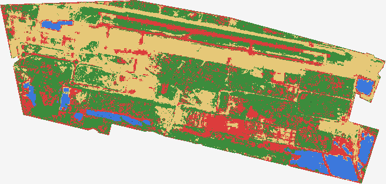
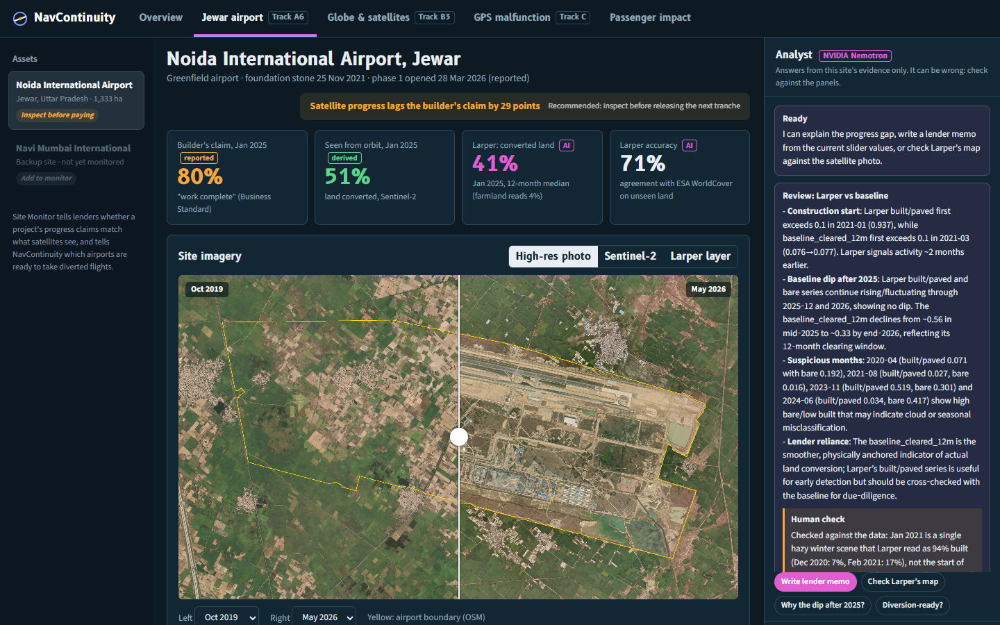

FlyWithEase
When GPS fails near an airport, flights divert. We make sure there is somewhere ready to go, and that no passenger is stranded.
Built on your marking scheme.Each criterion, and the slides that answer it.
The basics in one minute.Eight terms, each used later in the deck.
GPS / GNSS
Satellites 20,200 km up send timing signals. By the time they reach a plane they are weaker than background radio noise, which makes them easy to drown out.
Jamming
A transmitter on the ground drowns the signal in noise. The aircraft simply loses GPS. 71% of India's 2025 incidents were total loss.
Spoofing
A transmitter sends fake GPS signals, so the aircraft thinks it is somewhere else. This hit approaches to Delhi IGI in 2025.
What happens next
Crews switch to backup procedures, hold, or divert to another airport. On the ground receivers may need a reset before the next flight.
NIC (integrity)
Every aircraft broadcasts how much it trusts its own position. When many aircraft in one area report low trust, GPS there is being interfered with.
Sentinel-2
A free European satellite pair that photographs every place on Earth every ~5 days at 10 m per pixel, in 13 colour bands.
NDVI + Random Forest
NDVI measures how green a pixel is; concrete and bare soil score low. A Random Forest is a vote of 20 decision trees. Together they form Larper, our classifier.
Nemotron
NVIDIA's open reasoning model. We give it our measurements; it drafts a decision, a second pass fact-checks it, and a person signs it off.
GPS fails over India every day.The flights divert. The passengers pay.
GPS interference incidents reported to Parliament, Nov 2023 – Dec 2025
more in just Jan–Feb 2026: the rate is rising
of India's 2025 incidents meant total loss of GPS on board
GPS spoofing reports, 2024 vs 2023 (IATA)
Approaches to IGI Runway 10 were spoofed. Crews switched to contingency procedures; DGCA introduced real-time spoofing reports.
- Interference monitors know where GPS fails, but stop at the map.
- Airline ops pick a diversion airport without knowing whether it is built, ready, or in clean airspace.
- Passengers get "15 more minutes", missed connections and wrong-city hotels, because recovery starts after the fact.
What our research found.
Red: the two regions FlyWithEase covers first. Some locations were estimated by ICAO from incomplete reports.
Share of India's 2025 reports; categories overlap.
Boeing: interference has hit every model it builds.
- GPS and flight-computer positions disagree
- Wrong date and time on board
- Unexpected terrain-warning alerts
- Loss of satellite communication on some aircraft
- ADS-B lost, or broadcasting a wrong position
Effects "might not be immediately obvious" to crews, and the GPS receiver cannot be fully isolated from the terrain-warning system and clock.
| Boeing's plan | What Boeing is doing | Where FlyWithEase fits |
|---|---|---|
| 1 · Containment | GPS Event Monitor (GEM) records symptoms and location on each aircraft; reports go to the airline and Boeing | Track C turns many aircraft's integrity broadcasts into one regional map, live, for aircraft without GEM too |
| 2 · Improvement | Software updates to receivers and terrain-warning systems so bad GPS cannot spread | Outside our scope; our map shows where crews should expect false terrain warnings |
| 3 · Resilience | Dual-frequency, multi-constellation receivers, signal authentication, smart antennas, alternative positioning | Track B3: a low-orbit layer and NavIC cross-check; Track A6 and passenger recovery sit outside the aircraft entirely |
It is already happening to Boeing fleets.
Boeing 777
Sep 2023 · Iraq–Iran borderSpoofed on airway UM688. Navigation showed ~80 nm off track; the aircraft nearly entered Iranian airspace without clearance and the crew had to ask Baghdad ATC for its position.
FlyWithEase: Track C flags the spoofing band; dispatch reroutes and briefs crews before departure.
United Boeing 777
Aug 2024 · Delhi → NewarkSpoofed over the Black Sea; the GPS position drifted from the real one and stayed affected for the rest of the flight.
FlyWithEase: An India-origin flight: the warning reaches the dispatcher at Delhi, and a receiver check is booked before the next rotation.
Ryanair Boeing 737
Jan 2025 · Vilnius, LithuaniaInterference on final approach: the crew abandoned the landing at about 850 ft and diverted to Warsaw, in another country.
FlyWithEase: A pre-checked alternate (the A6 idea) and passenger recovery started at the go-around, not at the gate.
Boeing 787
2025 · NASA ASRS safety reportAfter a jamming event only one of two GPS receivers came back; the crew flew the rest of the flight on other navigation sources.
FlyWithEase: Nemotron's turnaround check: flag the tail for maintenance so the next departure is not delayed.
What a GPS failure costs.
Every minute in the air
per block minute, US airlines, 2025
45-minute hold ≈ $4,428 (derived)
Every diversion
| Regional | €1,000–7,000 |
| Continental | €1,400–10,500 |
| Intercontinental | €7,000–77,200 |
Before hotels, meals, rebooking, compensation and the next rotation's delay.
One airport, one bad day
Modelled GNSS-error scenario at Hong Kong International:
airline costs
passenger costs
Four users, four decisions, real money on each.
| User | Decision they make | What it costs today | What FlyWithEase gives them |
|---|---|---|---|
| Airline operations | Where to divert when Delhi's GPS degrades | €1,000–77,200 per diverted flight; $98 per block minute | A diversion airport that is built, in clean GPS airspace, with rebooking started early |
| Infrastructure lenders | Release the next construction tranche, or inspect first | Paying against optimistic progress reports (Jewar: 80% claimed) | Independent progress from orbit: 51% seen. Inspect for $15k instead of risking $112k |
| Passengers | Wait, rebook, or find a hotel | Hours of uncertainty, missed connections, lost bags | Honest status, a confirmed seat, care at the right airport |
| DGCA / AAI | Which airports and regions need protection | 2,977 incidents since Nov 2023 with no shared live picture | A map of where GPS fails and which airports can absorb traffic |
top-end cost of one intercontinental diversion
inspection cost vs expected loss, Jewar case (assumed inputs)
data cost: every satellite source we use is free and public
Priya's evening flight to Delhi diverts.The same night, with and without FlyWithEase.
| Stage | Today | With FlyWithEase |
|---|---|---|
| Holding | "15 more minutes", repeated for 45 minutes | Ops see the GPS warning (Track C) and start planning before the hold |
| Diversion | Lands wherever there is space, sometimes another state | Diverts to a confirmed-built airport in clean airspace (Track A6, conditional) |
| On the ground | Waits on board for news; no one knows the next step | Honest status and options pushed to her phone on landing |
| Connection | Misses it; queues at a transfer desk | Rebooked while still in the air, seat confirmed |
| Night and bag | Hotel in the wrong city; bag goes to Delhi without her | Hotel and bag routed to where she actually is |
cost of a 45-minute hold at $98.41 per block minute
cost of one diversion, before passenger care
passenger recovery is designed, not yet built
Track A, "Read the Planet", in plain words.Compulsory: one satellite objective, a working demo on real data, an economic decision.
- Pick one of six objectives (urbanisation, renewables, agriculture, night lights, disaster, infrastructure)
- A working demo on real satellite data
- Turn it into an economic decision: who pays, and how much is it worth?
- Infrastructure: monitor construction from orbit
- Site: Noida International Airport, Jewar, 70 km from Delhi IGI, its natural diversion airport
- 79 Sentinel-2 scenes, 2020–2026; Larper AI labels every 10 m pixel
- Result: builder said 80%, orbit saw 51% → a lender should inspect
India is buying Boeing jets faster than it builds airports
- Air India ordered 220 Boeing aircraft in 2023 (737 MAX, 787, 777X); Akasa Air flies an all-737 MAX fleet
- Boeing's market outlook expects South Asia to need ≈2,800 new jets over 20 years
- Every one of those jets needs a runway and a diversion airport that really exist; Jewar is Delhi's
- FlyWithEase checks that from orbit, for free, every 5 days
Reported: Air India / Boeing press release (Feb 2023); Boeing Commercial Market Outlook 2024.
Slides on research, Boeing, costs, users
Data, Larper, Nemotron, under the hood
Result, accuracy, lender and 787 cases
Live Jewar page + this objective
Objective 6: monitor construction from orbit.We watched the airport Delhi would divert to.
 2019 · farmland2026 · runway + terminal
2019 · farmland2026 · runway + terminalEsri World Imagery Wayback (Maxar, Earthstar), ~2 m. Yellow: 1,333 ha airport boundary (OpenStreetMap).
Why Jewar
70 km from Delhi IGI, 1,333 ha greenfield site, phase 1 opened 28 Mar 2026. If Delhi's GPS fails, this is where flights go, so it must really be ready.
The promise vs. the ground
| Nov 2021 | Foundation stone |
| Sep 2024 | First opening target, missed |
| Jan 2025 | "80% complete" |
| Mar 2026 | Phase 1 inaugurated |
How FlyWithEase works, step by step.
1 · Detect
2 · Absorb
3 · Harden
4 · Recover
Seven real datasets, all free and public.
| Dataset | Resolution | Volume | What it does for us |
|---|---|---|---|
| Sentinel-2 L2A · ESA Copernicus | 10 m, 13 bands | 79 monthly scenes | The measurement: land conversion and Larper's inputs, Jan 2020 – Nov 2026 |
| ESA WorldCover 2021 | 10 m | 19,068 labelled px | Training labels for Larper, taken only from land around the airport |
| Esri World Imagery Wayback | ~2 m | 13 dated versions | Human-readable before/after; a check on what Larper should see |
| OpenStreetMap | vector | 1 polygon | The 1,333 ha airport boundary used for every measurement |
| ADS-B Exchange (aircraft NIC) | 1° cells | 24,579 reports | Track C: where aircraft report degraded GPS |
| CelesTrak orbital elements | per satellite | GPS, Galileo, NavIC, LEO | The 3D globe and Track B3 geometry |
| Landsat GLS · NASA/USGS | 30 m | 1975–2010 | Before images for every airport on the globe |
Under the hood: pipeline, model, stack.
| Step | What happens | File |
|---|---|---|
| Fetch | Read only the airport window from cloud-optimised Sentinel-2 files; monthly scene list with direct band links | data/build_manifest.js |
| Clean | Scale and offset per scene (checked on raw pixels); cloud and shadow mask; cloudy months become gaps | a6/progress.mjs |
| Features | 6 bands + NDVI, NDBI, water and bare-soil indices = 10 numbers per 10 m pixel | a6/classify.mjs |
| Classify | Larper Random Forest: 20 trees, depth 12, 4 classes, every month | a6/classify.mjs |
| Decide | 12-month median of converted land vs reported milestones → release or inspect | a6/economics.mjs |
| Reason | Nemotron brief + fact-check over Track C and A6 outputs | decisions/brief.mjs |
Larper model card
10,483 training / 8,585 test pixels · labels: ESA WorldCover 2021 · trained west of the airport, tested on separate land to the east · 71% agreement on unseen land
Stack
Node.js only (geotiff.js, proj4, ml-random-forest) · static site on GitHub Pages · NVIDIA Nemotron by API, key kept server-side
Real problems we fixed
+1,000 DN offset that differs between collections · 8-month catalogue hole filled from a second catalogue · throttled large reads, so bands are read one at a time with retries
cd a6 && node progress.mjs && node classify.mjs
node economics.mjs && node demo.mjs
System architecture, file by file.
1 · Sources
- Sentinel-2 L2A (Earth Search, cloud-optimised GeoTIFF)
- ESA WorldCover 2021
- ADS-B Exchange samples
- CelesTrak orbital elements
- OSM footprint, Esri Wayback
2 · Pipelines (Node.js)
- data/build_manifest.js
- a6/progress.mjs, classify.mjs
- a6/economics.mjs, readiness.mjs
- c/fetch.mjs, analyze.mjs
- b3/physics.mjs, simulate.mjs
3 · Outputs
- a6/outputs/progress_ai.csv
- classifier_metrics.json, decision.json
- readiness.json
- c/outputs/gnss_summary.json
- decisions/nemotron_*.json
4 · Consumers
- Live site (GitHub Pages)
- This deck (build.mjs reads the same files)
- Nemotron brief + fact-check
- Lender, airline, DGCA views
How Nemotron is called
- decisions/brief.mjs gathers Track C cells near Delhi and Jewar, A6 readiness, the lender check, reported costs and stated limits into one DATA object
- POST to a serverless proxy (/api/analyst); the NVIDIA key lives only on the server
- Pass 1 (nemotron-3.5-lightning-30b-a3b) must answer in JSON; the script extracts the JSON and retries up to 3 times
- Pass 2 gets the brief + the same DATA and must list every unsupported claim with a fix
Engineering choices
- Read only the window: HTTP range reads, never a full 110 km tile
- Cached training samples, so a rerun does not refetch
- Deterministic: fixed seed 42, versioned parameters in every output
- Every number labelled reported, derived, simulated or assumed in the JSON itself
Larper: AI that labels every 10 m of the airport.
- Fetch only the airport window from cloud-optimised Sentinel-2 files (no full-tile downloads)
- Clean: per-scene scale/offset, cloud and shadow mask from the scene classification layer
- Features: 6 bands + NDVI, NDBI, water index, bare-soil index = 10 per pixel
- Classify: Random Forest, 20 trees, depth 12, built / bare / vegetation / water
- Measure: 12-month median of converted land per month, against a transparent NDVI baseline

agreement with WorldCover on unseen land
of built/paved pixels found (recall)
Larper, number by number.Features, training design and the full confusion matrix.
| Feature | Formula (Sentinel-2 bands) | Picks up |
|---|---|---|
| B2 B3 B4 B8 | blue, green, red, near-infrared reflectance (10 m) | colour, brightness |
| B11, B12 | short-wave infrared (20 m, resampled to 10 m) | concrete, dry soil |
| NDVI | (B8 − B4) / (B8 + B4) | living vegetation |
| NDBI | (B11 − B8) / (B11 + B8) | built-up surfaces |
| MNDWI | (B3 − B11) / (B3 + B11) | open water |
| BSI | ((B11+B4)−(B8+B2)) / ((B11+B4)+(B8+B2)) | bare soil |
| True ↓ / Pred → | vegetation | built / paved | bare | water | Recall |
|---|---|---|---|---|---|
| vegetation | 2,964 | 797 | 35 | 10 | 78% |
| built / paved | 273 | 2,398 | 56 | 0 | 88% |
| bare | 128 | 694 | 526 | 360 | 31% |
| water | 13 | 40 | 51 | 240 | 70% |
| Precision | 88% | 61% | 79% | 39% | 71.4% |
Nemotron turns satellite numbers into decisions,and checks its own work.
| Job | Model | What it does |
|---|---|---|
| Vision audit | super-vl-120b | Compares 4 Larper maps with satellite photos; flags over-called built land |
| Readiness brief | lightning-30b | Fuses Track C + A6 into a diversion decision: Jewar conditional |
| Fact-checker | lightning-30b | Second pass checks the brief against the data: pass with fixes, 5 issues found |
| Ops decisions | lightning-30b | Four real GPS failures: turnaround impact, options, fix |
| Analyst on site | lightning-30b | Lender memos and "what changed here?" on any place |
"DATA does not mention GPS-denied operations or contingency procedures; this is an operational assumption."
Fix: Remove reference to GPS-denied specifics not in DATA; treat as illustrative assumption.
Guardrails
Answers only from supplied data · structured JSON outputs · every number labelled reported, derived or assumed · human check on every case (we corrected Nemotron on Delhi: ILS was available).
Inside the two-pass brief, word for word.
Jewar: conditional
Satellite shows land conversion plateaued 2024-12; operational status reported from 28 Mar 2026; satellite cannot confirm runway certification or ATC readiness.
Unknowns it named: Runway certification status · ATC readiness and approach procedures · Airline slot availability at Jewar · confidence medium
nemotron-3.5-lightning-30b-a3b
DATA event field only says 'Scenario: GPS spoofing reported on Delhi IGI approaches (pattern seen in 2025, reported…
DATA track_c_jewar_region status is 'normal', but operational_status says 'reported operational from 28 Mar 2026'. …
DATA track_a6_jewar physically_present says 'yes (derived: land conversion plateaued 2024-12)'. The claim is suppor…
5 issues in total, each with a fix
✗ Larper marks large areas red that appear as green fields or bare earth in the photo; bare fraction (0.01) seems too low given visible bare…
✗ extensive tan bare earth inside the footprint is mapped green (vegetation) in places; some green field edges are mapped red (built/paved);…
4 months audited · nemotron-3.5-super-vl-120b-a12b
Answers only from the data we pass in, as structured JSON, with unknowns named
Pass 2 flags invented numbers and overstated certainty
We corrected Nemotron on Delhi: ILS was available on other runways
The builder said 80%. Orbit saw half.
"work complete", builder, Jan 2025 · reported
land converted, Jan 2025 (Larper – baseline) · derived
| Conversion starts | Jun 2023 |
| Peak | 56% in Apr 2025 |
| Built/paved, Mar 2026 | 21% |
How we know the numbers hold up.
| Class | Test pixels | Recall | Precision | Read as |
|---|---|---|---|---|
| vegetation | 3,806 | 78% | 88% | reliable |
| built / paved | 2,727 | 88% | 61% | finds construction; some over-calling |
| bare | 1,708 | 31% | 79% | weak: few training examples |
| water | 344 | 70% | 39% | small class, indicative |
Three checks on the AI
- Spatial holdout: tested on land never used in training
- Nemotron vision audit: 4 Larper maps compared with the satellite photos (trust: medium)
- Human spot-check: blind labelling page; a single hazy 2021 scene was caught and smoothed out
Limits we state
Land conversion is not completion · WorldCover is itself a model (agreement, not ground truth) · 10 m pixels cannot see individual buildings · monsoon months are gaps.
Release the next tranche, or inspect first?
Foundation stone laid
First opening target missed
Builder reports 80% complete
Sentinel-2 shows 51% converted (baseline), 41% (Larper)
Gap of 29 points → inspect
| Evidence | P(report optimistic) | Cost if release | Cost if inspect | Decision |
|---|---|---|---|---|
| No satellite evidence (prior) | 0.10 | $30,000 | $18,000 | INSPECT |
| Satellite: 51% converted vs 80% reported (gap 29 pts) | 0.38 | $112,500 | $26,250 | INSPECT |
| Counterfactual: satellite agrees with report | 0.03 | $9,000 | $15,900 | RELEASE |
break-even: inspect whenever the chance of an optimistic report is above this
expected cost avoided: $112,500 if released vs $26,250 if inspected
data cost of the satellite check; the inspection itself is $15k
From pixels to "inspect": the two formulas.
1 · Land-conversion baseline (no AI)
A pixel is cleared if its highest NDVI over the trailing 12 months stays below 0.30, so a crop that greens up once is never counted as construction.
| Parameter | Value |
|---|---|
| Trailing window | 12 months |
| Monsoon months excluded | Jul, Aug, Sep (fields green up) |
| "Not vegetated" threshold | NDVI < 0.25 |
| Minimum clear site | 60% of pixels, else the month is a gap |
| Reference ring | 1.5 km around the site, 300 m gap |
Jewar: conversion starts Jun 2023, plateaus Dec 2024, peaks at 56.1% in Apr 2025.
2 · Release-or-inspect rule
p = chance the report is optimistic · E = exposure ($300k) · I = inspection ($15k) · c = share of problems an inspection catches (0.9). All assumed.
| Gap: report − orbit | p used |
|---|---|
| up to 10 pts | 0.03 |
| 10–20 pts | 0.03 → 0.15 (linear) |
| 20–30 pts | 0.15 → 0.40 (linear) |
| 30 pts and above | 0.40 |
Jewar, Jan 2025: 80% reported vs 51% seen → gap 29 pts → p = 0.375 → release $112,500 vs inspect $26,250 → INSPECT.
A Boeing 787 can't use GPS into Delhi.Can Jewar take it? What orbit can and cannot answer.
Crews on Delhi approaches report spoofing; our GPS map shows cells north of Delhi at medium degradation
Ops open FlyWithEase: candidate alternate Jewar, 70 km away
Nemotron drafts the brief; the fact-check pass removes unsupported claims
Duty manager decides, with the checklist below. Passenger rebooking starts now, not at the gate
| Question | Who answers | Answer |
|---|---|---|
| Is GPS clean around Jewar? | Track C | Yes: 1,092 aircraft seen, region normal (derived, one day) |
| Is the airport physically built? | Track A6 | Yes: land conversion plateaued Dec 2024; runway and apron visible (derived) |
| Is the runway long enough for a 787? | Public record | Phase 1 runway ~3,900 m (reported), more than a 787 typically needs to land |
| Certified for wide-bodies, ILS working, stands and fuel free? | A person | Orbit cannot see this. FlyWithEase lists it as an open check, never as "safe" |
saved for every 45 minutes of holding avoided ($98.41 per block minute)
a 787-8 carries roughly this many people whose rebooking can start in the air
Everything here runs live.rehancodes-web.github.io/Mack.1

- Jewar monitor: drag 2019 vs 2026, switch to the Larper layer, read the progress curve
- Move the sliders: inspection cost and probability; watch the decision flip
- GPS malfunction map: 37 red zones, Jewar normal
- 3D globe: real GPS, Galileo, NavIC and LEO satellites; click any of 4,155 airports
- Passenger impact: Nemotron's decisions on four real GPS failures


Track C, "Guard the Nation", in plain words.Optional: security and sovereignty from space, protective use only.
- Areas: maritime, borders, enforcement, GNSS resilience, sovereign capability, critical infrastructure
- Hard rule: protective only. No weapons, no targeting, no tracking of individual people
- Deliverable: a demo or a solid architecture
- Read 24,579 real aircraft reports (ADS-B, 1 Nov 2026)
- Each aircraft says how much it trusts its own position (NIC). Many low values in one 1° cell = GPS is being jammed or spoofed there
- Result: 37 high-interference zones; Jewar region normal
- Protective: we map areas only. We never locate a jammer or follow a flight
Boeing sees one aircraft. We see the sky.
- Boeing told ICAO (2024) that GNSS interference has affected every Boeing model
- Its GPS Event Monitor logs what happened on each aircraft, after the fact, for that airline
- A Boeing 777 was spoofed ~80 nm off track near the Iraq–Iran border (2023)
- FlyWithEase combines all aircraft in a region, live, so dispatch can warn a crew before departure
Reported: ICAO NACC WG/9 IP/04 (Sep 2024); OPSGROUP (Sep 2023).
Links GPS health to a ready diversion airport
Real ADS-B data, per-cell rating, four cases
Free data, read-only pilot, rule respected
Track C: a live map of where GPS is failing.

aircraft reports, one day
high-interference zones
Jewar region, 1,092 aircraft
| Track C objective | How we meet it |
|---|---|
| Detect GPS jamming / spoofing | Aircraft broadcast trust in their own position (NIC); low values in a 1° cell = degraded GPS. Altitude mismatches flag possible spoofing. |
| Protect critical infrastructure | Feeds the A6 decision: a diversion airport must sit in clean airspace |
| Protective use only | Areas only; no transmitter hunting, no targeting, no tracking of individual flights |
Hotspots: India–Pakistan border and Myanmar. Limit: one day (1 Nov 2026, 72 snapshots); a pilot needs a continuous feed.
How the GPS-malfunction map is computed.
- Collect 24,579 ADS-B position reports (72 snapshots, 2026-11-01); ADS-B version ≥ 1 only.
- Read NIC, the integrity category (0–11) every aircraft broadcasts. NIC < 7 means the aircraft cannot vouch for its position to ~0.2 nm: degraded.
- Grid into 1° cells; count each aircraft once per cell; skip cells with fewer than 10 aircraft.
- Rate: degraded share ≤ 2% low · ≤ 10% medium · above that high.
- Spoofing hint: GPS and barometric altitude differ by more than 1,500 ft → flag.
cells rated
rated high
rated medium
| Hotspot cell | Aircraft | Degraded | Share | Alt. mismatch |
|---|---|---|---|---|
| 33N 71E | 12 | 8 | 66.7% | – |
| 33N 70E | 24 | 12 | 50.0% | – |
| 33N 72E | 14 | 7 | 50.0% | – |
| 17N 96E | 11 | 5 | 45.5% | 6 |
| 34N 71E | 19 | 8 | 42.1% | – |
| 31N 72E | 33 | 13 | 39.4% | – |
| 28N 82E | 11 | 4 | 36.4% | 3 |
| 13N 97E | 12 | 4 | 33.3% | 8 |
31–34N 70–72E: India–Pakistan border region. 13–17N 96–97E: Myanmar, where altitude mismatches point to spoofing rather than jamming. Jewar's 5 cells: 1,092 aircraft, normal.
Delhi IGI: GPS approaches to Runway 10 were spoofed.
1 · Reported
RNP (GPS) approaches to Runway 10 spoofed; crews used contingency procedures; ILS stayed available on other runways.
2 · Track C
Cells north of Delhi: 5.8%–8.7% degraded (medium). Jewar region: 1,092 aircraft, 0–1.5%, normal.
3 · Track A6
Jewar physically built (conversion plateaued Dec 2024). Verdict: conditional, since orbit cannot see certification or ATC.
4 · Nemotron
Drafted actions for airline ops, ATC, passenger desk and lender. First suggestion: divert to Jewar.
5 · Fact-check
Second pass: pass with fixes, 5 issues, e.g. GPS-denied procedures claimed that are not in our data.
Today
- Crews find out on the approach; ops learn from crew reports
- Diversion airport picked without knowing it is built or in clean airspace
- Passengers told after landing
Human final decision
Move arrivals to an ILS runway at IGI; Jewar is the fallback, confirmed by Track A6.
Nemotron said "divert to Jewar"; the reviewer corrected it: Facts say ILS stayed available on other runway directions and movements were unaffected.
Amritsar and Jammu: aircraft lose GPS near the border.
276 incidents in north-western India in 2025 (reported). Track C shows a band of high-interference cells along the border (derived).
| Option Nemotron weighed | For | Against |
|---|---|---|
| Hold at alternate airport | Avoids jamming zone; uses proven runway | Increases fuel burn and crew duty time |
| Attempt approach with GPS override | May allow landing at origin airport | Risk of missed approach if receivers do not recover; safety critical |
| Diversion to Noida International Airport | New runway designed for CAT III operations; outside jamming zone | Longer ground transit for passengers; slot availability uncertainty |
Nemotron decided
Divert to Jewar, outside the jamming band; warn every aircraft in the sector.
Human final
Divert away from the jamming band (Jewar or Delhi), after checking approach aids; use Track C to warn every flight in the sector.
Corrected: "CAT III at Jewar" is not in our data, and B3 is a future system, not available today.
Tartu: GPS interference stopped a route for a month.
GPS interference over the Baltic intensifies
Finnair suspends Helsinki–Tartu: the GPS-based approach is unusable
Tallinn Airport is unaffected; passengers rerouted via Tallinn by road
Suspension ends; Helsinki–Tartu flights resume
Nemotron, given only the facts
Choose diversion to Tallinn Airport because it is unaffected by the interference and ensures safe approach without receiver reset delays.
Human final (verdict: agreed)
Operate to Tallinn and pre-book the road transfer and rebookings before departure.
What FlyWithEase would have added
- Track C: the interference trend visible in aircraft data before the suspension
- Track A6-style check that the alternate (Tallinn) can absorb the traffic
- Coach transfers and rebookings booked before departure, not at arrival
Track B3, "Positioning & sensing", in plain words.Better GPS from low-orbit satellites, with back-of-envelope physics and cost.
- GPS satellites are 20,200 km up, so their signal arrives weaker than radio noise
- A satellite at 1,000 km is ~20× closer; signal strength falls with distance squared
- So the signal is 19 dB stronger and a 10 W jammer's reach shrinks from 127 km to 14 km
- 114 satellites at 1,000 km keep ~4 in view over India
- Spoofing detected: 1% → 92% with GPS + NavIC + LEO and an AI cross-check
- Spoofed error 50 → 8 m after correction (simulated)
- ~$445M to build, ~$82M a year (assumed); builds on India's NavIC
Boeing already builds both halves
- Boeing built the 12 GPS Block IIF satellites that still serve every GPS user
- Boeing's Millennium Space Systems builds small satellites for low-orbit constellations
- Boeing's own plan to ICAO (phase 3) calls for multi-constellation receivers and alternative positioning, exactly what B3 supplies
- A 737 MAX or 787 with a multi-constellation receiver could use a LEO layer with no new antenna class
Reported: Boeing / US Space Force (GPS IIF); Boeing (Millennium); ICAO IP/04. Last bullet is our proposal.
Track B3: bring navigation closer and jamming weakens.
stronger: 1,000 km vs 20,200 km (inverse-square law) · physics
smaller area a 10 W jammer can deny (127 → 14 km radius)
spoofed error with an AI cross-check of GPS + NavIC + LEO · simulation
spoofing detected: GPS alone vs three constellations
| Constellation | Spoofing detected | False alarms | Clean error | Spoofed error after AI |
|---|---|---|---|---|
| GPS only | 1.2% | 0.8% | 6.1 m | 81 m |
| GPS + NavIC | 87.7% | 1.0% | 5.1 m | 19 m |
| GPS + NavIC + LEO | 92.4% | 0.4% | 3.8 m | 8 m |
114 satellites at 1,000 km for ~4 in view · ~$445M to build, ~$82M a year (assumed inputs). Builds on India's NavIC. Not needed for the pilot.
B3: the physics and the simulation, worked out.
Slant range at 10° elevation: GPS 24,713 km, LEO 2,762 km
20·log10(24,713 / 2,762) ≈ 19 dB
LEO received ≈ -109.5 dBm at equal transmit power
Denial radius: GPS 127.4 km → LEO 14.24 km; area ∝ r² → 80× smaller
| Receiver hears | Spoofing detected | False alarms | Clean error | Spoofed, trusted | Spoofed, AI-corrected |
|---|---|---|---|---|---|
| GPS only | 1.2% | 0.8% | 6.1 m | 81 m | 81 m |
| GPS + NavIC | 87.7% | 1.0% | 5.1 m | 65 m | 19 m |
| GPS + NavIC + LEO | 92.4% | 0.4% | 3.8 m | 50 m | 8 m |
Others solve parts of this.Nobody closes the loop.
| Who | Detects GPS failure | Verifies diversion airport | Recovers passengers | Connects all three |
|---|---|---|---|---|
| Spire · satellite RF interference detection | ||||
| Jeppesen · interference awareness for pilots | ||||
| Boeing GPS Event Monitor · on-aircraft GPS event records | ||||
| SAT-JAM · Sentinel orbit-level interference maps | ||||
| EO construction analytics · satellite progress monitoring | ||||
| Amadeus Passenger Recovery · rebooking after disruption | ||||
| FlyWithEase |
Nobody checks from orbit that the diversion airport is actually built.
GPS health and airport readiness feed one Nemotron brief.
A second Nemotron pass fact-checks every brief before a person sees it.
Feasible today, with the constraints stated.
Runs today
- 79-scene Sentinel-2 pipeline
- Larper trained and tested
- GPS map from real aircraft data
- Nemotron two-pass briefs
- Live site; ₹0 data cost; one laptop
Assumptions
- Inspection $15k, exposure $300k, 90% catch rate
- Land conversion tracks real progress
- NIC drops mostly mean interference
- B3 satellite cost $3M each
Constraints
- Sentinel-2 revisits every 5 days; clouds in monsoon
- One day of ADS-B so far
- Satellites can't confirm ATC or certification
- Airline systems needed for rebooking
| Risk | Mitigation |
|---|---|
| AI misreads bare soil (31% recall) | Decision uses the NDVI baseline too; Nemotron audit + human spot-check |
| AI gives a wrong operational answer | Second Nemotron pass fact-checks; a person approves every action |
| Data gaps | Gaps shown as gaps; "unknown" never reads as "safe" |
What it costs to run, and to scale.
Today and the pilot (A6 + Track C + Nemotron)
| Item | Cost | Basis |
|---|---|---|
| Satellite data | ₹0 | Sentinel-2, WorldCover, Landsat: free and open |
| Aircraft integrity | ₹0 sample; licensed feed for pilot | one free day used; continuous ADS-B is a commercial licence |
| Compute | one laptop | full A6 rerun incl. Larper training ≈ 20–30 min |
| Hosting | ₹0 | GitHub Pages + one serverless function |
| AI | a few calls per decision | Nemotron is an open model; can be self-hosted |
| People (pilot) | 2 engineers × 3 months | assumed; read-only, no airline system changes |
B3 low-orbit layer (long term, assumed inputs)
| Line | Arithmetic | Result |
|---|---|---|
| Satellites | 114 × $3M | $342M |
| Launch | 114 × 150 kg × $6,000/kg | $102.6M |
| Capex | satellites + launch | $444.6M |
| Replacement | capex ÷ 6-year life | $74.1M/yr |
| Operations | ground segment | $8M/yr |
| Per year | replacement + operations | $82.1M |
A 12-week shadow pilot at Delhi.Read-only. FlyWithEase recommends, people decide, nothing in the airline changes.
| Weeks | What happens | Output |
|---|---|---|
| 1–2 | Connect a continuous ADS-B integrity feed; daily Track C map for north India; Sentinel-2 refresh every 5 days for Delhi alternates (Jewar, Jaipur, Lucknow) | Daily GPS-health and alternate-readiness board |
| 3–4 | Replay the airline's last 12 months of Delhi diversions against our data | Would we have warned earlier, and by how much? |
| 5–10 | Live shadow mode: every GPS event gets a Nemotron brief + fact-check, logged next to what ops actually did | Side-by-side decision log |
| 11–12 | Measure; review with ops and a DGCA observer | Go / no-go report |
We need from the airline
- Diversion and holding log (read-only)
- One ops-control contact
- Agreement to compare, not to act
Measured
- Minutes of warning gained before the first diversion
- Share of diversions to a ready, clean-airspace alternate
- Briefs passing fact-check without edits
- Minutes from GPS event to confirmed rebooking
Risk register: what could go wrong.
| Risk | Likely | Impact | Mitigation already in place | Residual |
|---|---|---|---|---|
| Larper over-calls built land | High | Med | Progress uses converted land + NDVI baseline; vision audit; human spot-check (bare recall 31% stated) | Low: two methods agree |
| Clouds, monsoon gaps | High | Low | Months under 60% clear shown as gaps; monsoon excluded from baseline; 5-day revisit | "Unknown", never "safe" |
| NIC drop is not interference | Med | Med | Cell needs ≥ 10 aircraft; share threshold; altitude-mismatch check; multi-day trend in pilot | Low with a continuous feed |
| Nemotron invents a fact | Med | High | Grounded DATA only, JSON output, second-pass fact-check (found 5 issues), human sign-off | Low: AI never acts |
| Orbit cannot see certification, ATC | Certain | High | Listed as an open check in every brief | Handled by a person |
| Misuse for targeting (Track C rule) | Low | High | Only per-cell shares produced; no identities, no transmitter location | Rule met by design |
| Airline integration effort | Med | Med | Shadow mode, read-only, no system changes | Low |
| Data source discontinued | Low | Med | Sentinel-2C (in orbit since 2024) continues the series; Landsat as backup | Low |
| B3 cost and timeline | High | Low for pilot | Long-term layer with partners; the pilot does not depend on it | Accepted |
Does the decision survive our assumptions?Better action and its expected saving. Exposure $300,000, inspection catches 90%.
| Chance report is optimistic ↓ / Inspection cost → | $5,000 | $15,000 | $30,000 | $60,000 | $100,000 |
|---|---|---|---|---|---|
| p = 0.03 · orbit agrees with report | INSPECT saves $3,100 | release saves $6,900 | release saves $21,900 | release saves $51,900 | release saves $91,900 |
| p = 0.05 | INSPECT saves $8,500 | release saves $1,500 | release saves $16,500 | release saves $46,500 | release saves $86,500 |
| p = 0.1 · no satellite (prior) | INSPECT saves $22,000 | INSPECT saves $12,000 | release saves $3,000 | release saves $33,000 | release saves $73,000 |
| p = 0.2 | INSPECT saves $49,000 | INSPECT saves $39,000 | INSPECT saves $24,000 | release saves $6,000 | release saves $46,000 |
| p = 0.375 · Jewar, 29-pt gap | INSPECT saves $96,250 | INSPECT saves $86,250 | INSPECT saves $71,250 | INSPECT saves $41,250 | INSPECT saves $1,250 |
| p = 0.5 | INSPECT saves $130,000 | INSPECT saves $120,000 | INSPECT saves $105,000 | INSPECT saves $75,000 | INSPECT saves $35,000 |
At p = 0.375 the break-even inspection cost is 0.375 × 300,000 × 0.9 = $101,250, about 7× our assumed $15,000.
Scorecard: the evidence for every mark.
GPS will keep failing.Passengers shouldn't pay for it.
Working prototype: A6 on real data, Track C map, Nemotron briefs, live site
Shadow pilot with one airline at Delhi; daily GPS-integrity feed
More hubs; satellite GNSS data as a second source; passenger recovery flow
Regulator dashboard (DGCA, AAI); B3 low-orbit layer with partners
per diverted passenger, vs today
share sent to built, clean-airspace alternates
lender decisions backed by orbit
Nemotron two-pass, then human sign-off
Overview · Jewar (A6) · GPS map (C) · Globe (B3) · Passengers · Deck